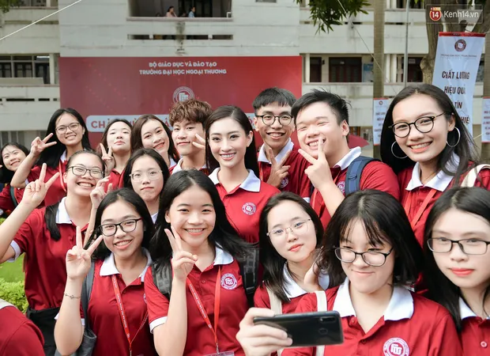
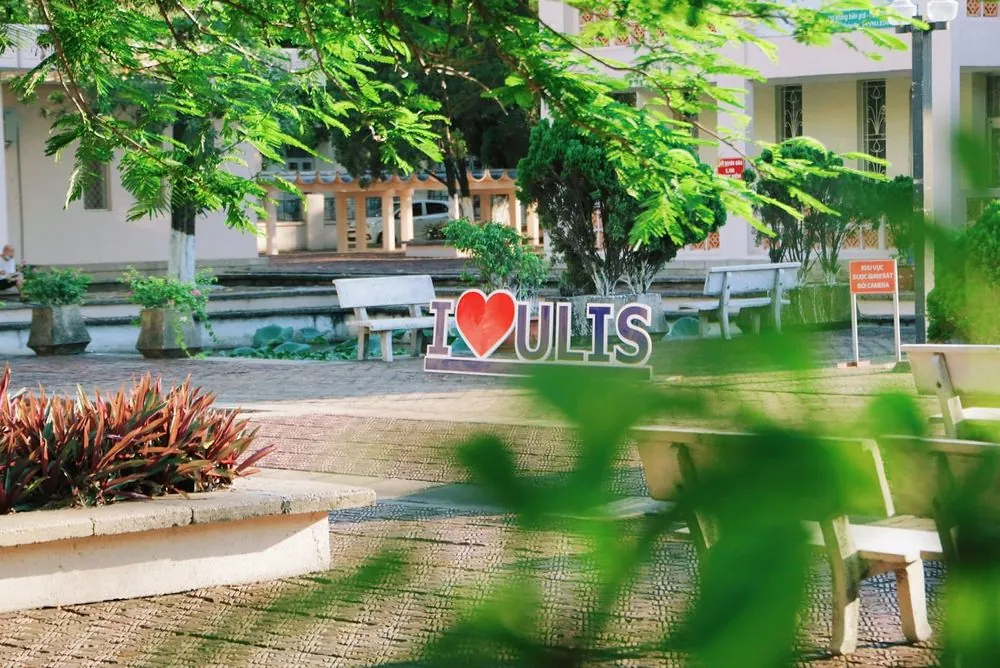
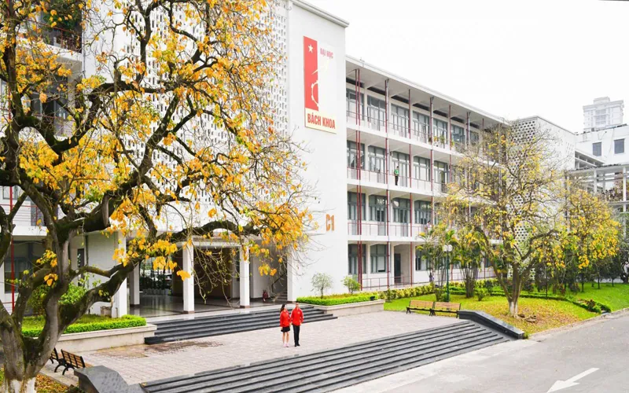
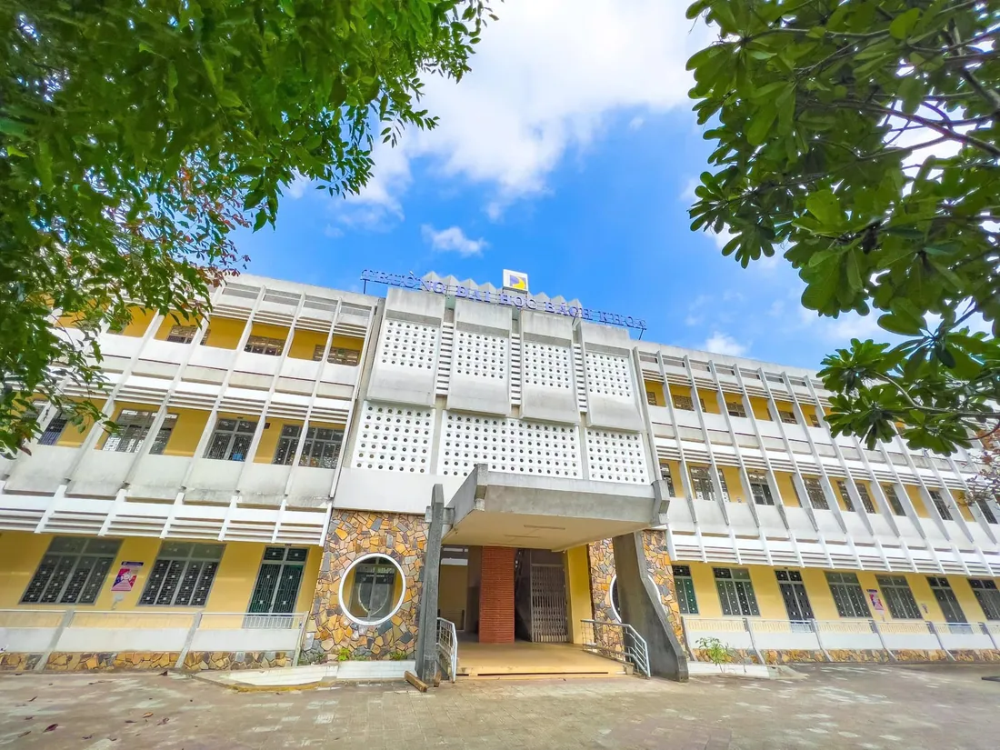
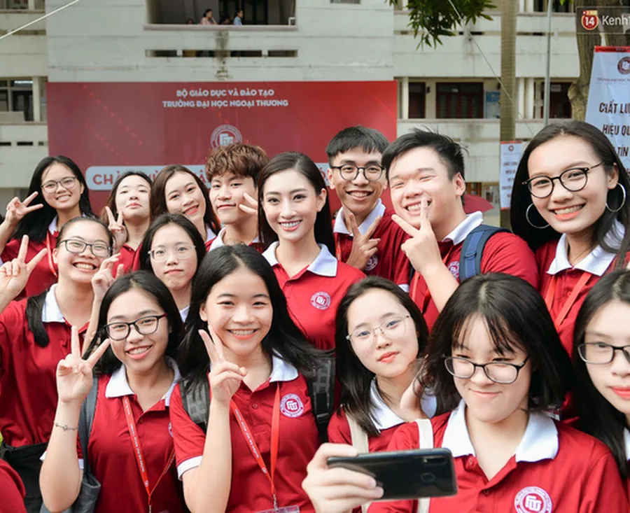
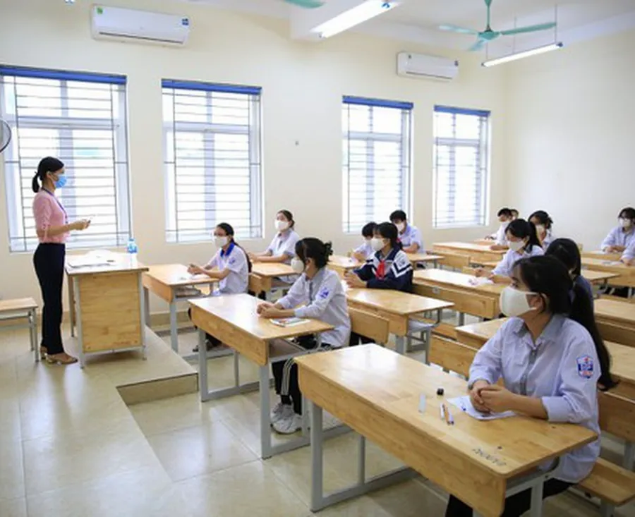
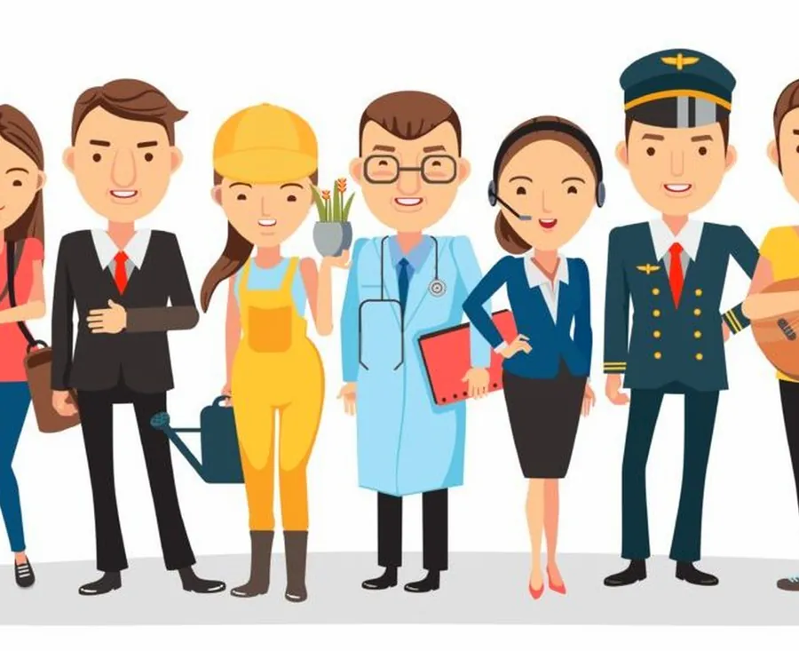
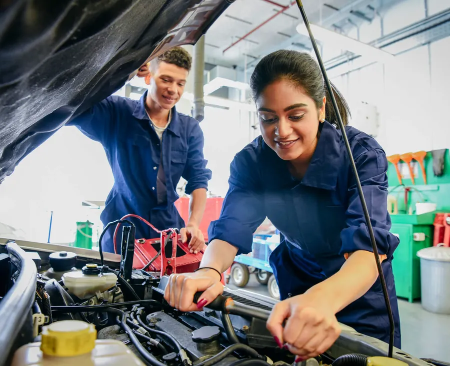
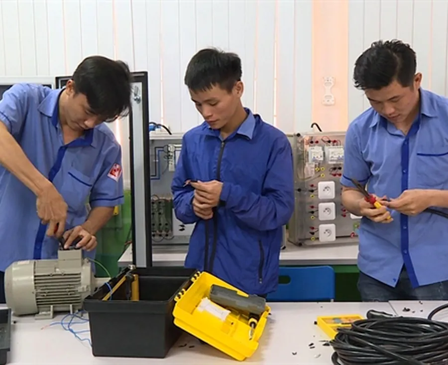

Planning our education
Lesson 1 — Getting started
7Five stops in 45 minutes
- 🏫
Warm-up
Guess the university
5 min - 🔤
Vocabulary
8 words for the next chapter
7 min - 🎧
Listen and read
Mai and Nam · Tasks 1–4
20 min - 🎭
Role-play
At the education fair
10 min - ✅
Wrap-up
Exit ticket
3 min
Warm-up
Guessing game — famous universities
5 minutesWhich university is it? · Ha Noi



Which university is it? · Da Nang

Choose your route!
🎓 University / college
academic subjects
degrees and research
campus and clubs
🔧 Vocational school
hands-on learning
job-specific skills
a quicker route to work
Vocabulary
8 words for the next chapter
7 minutes




Listen and read
Planning our education
20 minutesWhat can you see?
1. What can you see in the pictures? a female scientist and a young car mechanic with his father
2. What do Mai and Nam want to do after finishing school? Mai: university → biology → a scientist · Nam: a vocational school → a car mechanic
Planning our education
Ms Hoa: Good morning, class. There was an education fair last weekend. Did anyone go?
Nam: Yes, Mai and I did. The fair was great, and we got a lot of useful information.
Ms Hoa: I’m glad to hear that. Would you like to share some of it with the class?
Planning our education
Mai: Sure. After finishing school, we mainly have two education options. For example, we can get into university if we earn high grades or pass the university entrance exam.
Nam: That’s true, but academic education isn’t everything. The other option is going to a vocational school where we can learn skills for particular jobs.
Planning our education
Ms Hoa: That sounds interesting. So what are your plans for the future?
Mai: I’m hoping to go to university. Having won several biology competitions, I want to study biology and become a scientist.
Ms Hoa: Great! It’s really important to follow your dream, Mai.
Planning our education
Mai: My mum still regrets not having gone to university. So I want to make her proud of me. How about you, Nam?
Nam: Well, I don’t think university is for me. I want to go to a vocational school because I want to become a car mechanic. My father owns a car repair shop. Having watched him work very hard for many years helped me make my decision.
Ms Hoa: That’s very sensible, Nam! I hope you can help him grow his business.
True or false?
- School-leavers only have the option of academic education. FALSE “we mainly have two education options”
- Good grades at school can help students get into university. TRUE “we can get into university if we earn high grades”
True or false?
- Vocational schools are for those who want to develop job skills. TRUE “a vocational school where we can learn skills for particular jobs”
- Nam wants to work at his father’s car repair shop after leaving school. FALSE He wants to go to a vocational school first.
Find the phrases
1. an event at which students can talk to representatives of universities or vocational schools about their study options · e___ f___ education fair
2. an exam that someone takes to be accepted into a school or university · e___ e___ entrance exam
Find the phrases
3. studying at school or university to gain knowledge and develop thinking skills · a___ e___ academic education
4. a place that teaches skills needed for particular jobs · v___ s___ vocational school
Education · school · exam
education primary / vocational / university education · pursue / get / receive an education · education system / programme
school go to / start / quit / leave school · primary / secondary school
exam take / do / sit / pass / fail an exam · revise for an exam · exam paper / results
Complete the sentences
1. ________ several biology competitions, Mai wants to study biology and become a scientist. Having won
2. Mai’s mum still regrets not ________ to university. having gone
3. ________ his father work very hard for many years helped Nam make his decision. Having watched
💡 having + past participle — an action completed before another one. More in Lesson 2!
Role-play
At the education fair
10 minutesAt the education fair
- 🧑🏫
Teacher / counsellor
What are you hoping to do after school?
- 🎓
Student A
I’d like to go to … because …
- 🔧
Student B
I’m interested in … because …
- 💬
Student C
That’s sensible. Have you considered …?
Before you leave…
1. Name one education option. academic education (university) · vocational education (vocational school)
2. Use sensible in a sentence. e.g. Going to a vocational school is a sensible choice for Nam.
3. What does vocational mean? connected with the skills you need for a particular job
4. Which path suits Nam, and why? a vocational school — he wants to become a car mechanic like his father
Homework
1. Do the Getting started exercises in the workbook.
2. Prepare for Lesson 2 — Language: intonation in questions, perfect gerunds.
3. Think about the project in Lesson 8: research on an educational institution.